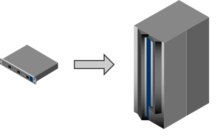
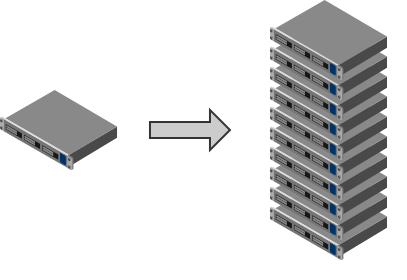
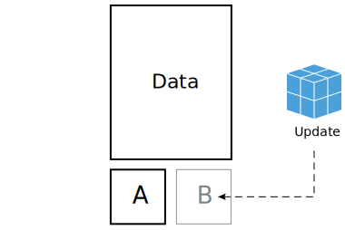
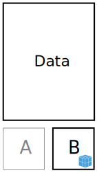

Agenda
- Clustering
- etcd
- CoreOS
- fleet
Scalability
How to deal with high load?
Scalability
Scale up - give me more!

- Give more CPU to the node..
- Give more memory to the node..
- Give more storage to the node..
Scalability
Scale up - painful consequences
- Need for more and more expensive hardware
- Need for careful resource planning
- Availability issues - backup machine needs to be as fast as production
Scalability
Scale out - let's cluster!

- Use cheap hardware!
- Easily add new nodes!
- Remove/reuse nodes as they are not needed
Clustering
What is cluster?
- Set of connected computers that work together
- ...to improve performance
- ...and availability
- ...and save money!
Consensus
is..
- "fundamental problem in fault-tolerant distributed systems"
- "multiple servers agreeing on values"
- "replicated state machines"
Raft
Consensus algorithm
- Designed as an alternative to overly complicated Paxos
- Strong leadership - flow only from leader to other servers
- Leader election by voting with randomized timers
- Membership changes by using join consensus approach
Raft
Basics
- Server can be in one of three states: Leader, follower, or candidate
- Time is divided into terms, and each term begins with an election
- Data is stored as indexed log applied to state machine
- Only two commands: AppendEntries RPC and RequestVote RPC
Raft
Elections
- Leaders send empty AppendEntries (heartbeats) to followers
- If follower doesn't receive heartbeat in randomized timer, convert to candidate
- Candidate increment currentTerm, vote for self and send RequestVote to all other servers
- If votes received from majority, convert to leader
Raft
Operations
- Leaders receive command from client, write to log and send AppendEntries to followers (in parallel)
- Followers acknowledge command (if agreed on term number and log index)
- When command is replicated to majority, apply to staten machine and return result to client
- Raft consensus algorithm
- Key-value distributed data store
- Simple API - JSON on HTTP
- Simple implementation of Raft consensus algorithm
- Multiple discovery methods
- Typical cluster size - 5, 7 or 9 nodes
- Extra nodes can become proxy and can be promoted to follower
Discovery service
$ curl -w "\n" https://discovery.etcd.io/new
https://discovery.etcd.io/6a28e078895c5ec737174db2419bb2f3
- Discovery service stores peer address and initial cluster size
- First node become leader
- All following nodes become peers
- Run your own discovery with github.com/coreos/discovery.etcd.io
Keys: set
$ etcdctl set /message Hello
Hello
$ curl -sL -X PUT http://127.0.0.1:4001/v2/keys/message -d value="Hello" | python -m json.tool
{
"action": "set",
"node": {
"createdIndex": 6,
"key": "/message",
"modifiedIndex": 6,
"value": "Hello"
},
"prevNode": {
"createdIndex": 5,
"key": "/message",
"modifiedIndex": 5,
"value": "Hello"
}
}
Keys: get
$ etcdctl get /message
Hello
$ curl -sL http://127.0.0.1:4001/v2/keys/message | python -m json.tool
{
"action": "get",
"node": {
"createdIndex": 6,
"key": "/message",
"modifiedIndex": 6,
"value": "Hello"
}
}
Directories
$ etcdctl mkdir /foo-service
Cannot print key [/foo-service: Is a directory]
$ etcdctl set /foo-service/container1 localhost:1111
localhost:1111
$ etcdctl ls /foo-service
/foo-service/container1
$ curl -sL http://127.0.0.1:4001/v2/keys/foo-service | python -m json.tool
{
"action": "get",
"node": {
"createdIndex": 7,
"dir": true,
"key": "/foo-service",
"modifiedIndex": 7,
"nodes": [
{
"createdIndex": 15,
"key": "/foo-service/container1",
"modifiedIndex": 15,
"value": "localhost:1111"
}
]
}
}
Test & Set
$ etcdctl set /message "Hi" --swap-with-value "Hello"
Hi
$ curl -sL -X PUT http://127.0.0.1:4001/v2/keys/message?prevValue=Hi -d value=Hello | python -m json.tool
{
"action": "compareAndSwap",
"node": {
"createdIndex": 6,
"key": "/message",
"modifiedIndex": 17,
"value": "Hello"
},
"prevNode": {
"createdIndex": 6,
"key": "/message",
"modifiedIndex": 16,
"value": "Hi"
}
}
TTL (Time To Live)
$ etcdctl set /foo "Expiring Soon" --ttl 20
Expiring Soon
$ curl -sL -X PUT http://127.0.0.1:4001/v2/keys/foo?ttl=20 -d value=bar | python -m json.tool
{
"action": "set",
"node": {
"createdIndex": 20,
"expiration": "2015-01-28T15:04:31.811807562+01:00",
"key": "/foo",
"modifiedIndex": 20,
"ttl": 20,
"value": "bar"
}
}
CoreOS
- Cluster oriented
- Container oriented
- Chromium OS/Gentoo based
- Rolling releases
CoreOS
- Fast and lightweight distro
- 64bit only
- Built-in Chaos Monkey
- No package manager
Supported containers
dockerrocketsystemd-nspawn
Debugging tools
/usr/bin/toolbox
Toolbox will launch a container with full system privileges including access to system PIDs, network interfaces and other global information
System updates

CoreOS is currently booted off partition A. An update is installed onto partition B
System updates

Machine is rebooted onto the B partition
System updates
- Safe and easy rollback
- Signed and easy to verify system image
- Fast reboot with kexec
Installation from LiveCD
coreos-install -d /dev/sda -C stable -c cloud-config.yaml
-d DEVICE Install CoreOS to the given device.
-V VERSION Version to install (e.g. current)
-C CHANNEL Release channel to use (e.g. beta)
-o OEM OEM type to install (e.g. openstack)
-c CLOUD Insert a cloud-init config to be executed on boot
-t TMPDIR Temporary location with enough space to download images
cloud-config sections
-
coreos
- coreos.etcd.*
- coreos.fleet.*
- coreos.update.*
- ssh_authorized_keys
- hostname
- users
- write_files
- manage_etc_hosts
cloud-config example
#cloud-config
hostname: foobar1
ssh_authorized_keys:
- ssh-rsa AAAAC7KsWb3w4s9i5/HJqyAbqqyqnR9I9two2htKOsCRd...
coreos:
etcd:
# generate using https://discovery.etcd.io/new
discovery: https://discovery.etcd.io/<token>
addr: 10.20.30.1:4001
peer_addr: 10.20.30.1:7001
units:
- name: etcd.service
command: start
- name: fleet.service
command: start
systemd glossary
unit
is a configuration file that describes the properties of the process that you'd like to run
target
is a grouping mechanism that allows systemd to start up groups of processes at the same time
fleet
"You can think of fleet as an extension of systemd that operates at the cluster level instead of the machine level. Systemd is a single machine init system; fleet is a cluster init system."
fleet-specific options
MachineID |
Require the unit be scheduled to the machine identified by the given string. |
MachineOf |
Limit eligible machines to the one that hosts a specific unit. |
MachineMetadata |
Limit eligible machines to those with this specific metadata. |
Conflicts |
Prevent a unit from being collocated with other units using glob-matching on the other unit names. |
Global |
Schedule this unit on all agents in the cluster. |
Thank you for your attention